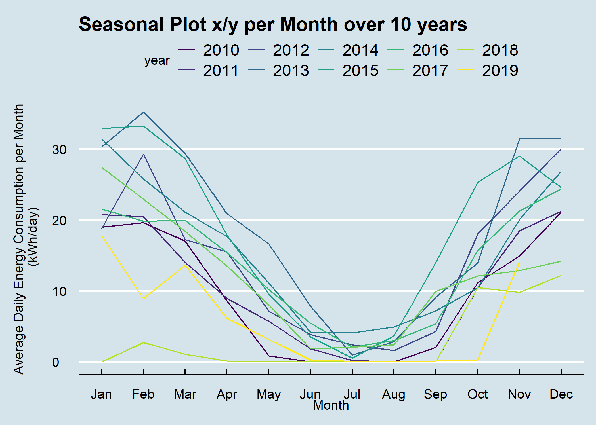

6.2 Seasonal Plot - x/y
6.2.1 Goal
Plot a seasonal plot as described in Hyndman and Athanasopoulos (2014, chapter 2.4):
This is like a standard time series plot except that the data are plotted against the “seasons” for each year. Be aware that seasons in this context don’t correlate with the seasons of the year.
That’s what we would like to have:

Figure 6.1: Seasonal Plot x/y per Month over 10 Years
6.2.2 Data Basis

Figure 6.2: Raw Data for Seasonal Plot x/y
6.2.3 Solution
library(forecast)
library(dplyr)
library(plotly)
library(htmlwidgets)
library(ggthemes)
library(viridis)
library(lubridate)
# load csv file
df <- read.csv2("https://github.com/hslu-ige-laes/edar/raw/master/sampleData/flatHeatAndHotWater.csv",
stringsAsFactors=FALSE)
# filter flat
df <- df %>% select(timestamp, Adr02_energyHeat)
colnames(df) <- c("timestamp", "meterValue")
# calculate consumption value per month
# pay attention, the value of 2010-02-01 00:00:00 represents the meter reading on february first,
# so the consumption for february first is value(march) - value(february)!
df <- df %>% mutate(value = lead(meterValue) - meterValue)
# remove counter value column
df <- df %>% select(-meterValue)
# value correction (outlier because of commissioning)
df[1,2] <- 600
# create time series object for ggseanplot function
df.ts <- ts(df %>% select(value) %>% na.omit(), frequency = 12, start = min(year(df$timestamp)))
# create x/y plot
numYears = length(unique(year(df$timestamp))) # used for colours
plot <- ggseasonplot(df.ts,
col = viridis(numYears),
main = "Seasonal Plot x/y per Month over 10 years",
ylab = "Energy Consumption (kWh/month)"
)
# show static plot (uncomment it if you want a static plot)
#plot
# change theme (optional)
plot <- plot + ggthemes::theme_economist()
# make plot interactive (optional)
plotly <- plotly::ggplotly(plot)
# show plot interactive plot (optional)
plotly6.2.4 Discussion
A seasonal plot allows the underlying seasonal pattern to be seen more clearly, and is especially useful in identifying years in which the pattern changes.
Hints:
in the interactive version you can double-click on year in the legend, then only this year is visible
click once to activate/deactivate a year